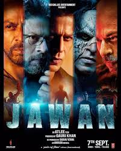

Thiruchitrambalam

Never did I think this would be one of my favourite movies when I first saw the trailer. It's such a feel good movie and what made the watch-experience more special is that, I went to watch it with my dosths.
Elite

The series still has few more seasons that I'm yet to watch. Currently on hold. But I would definietly vouch for the series considering
- the spectacular screenplay
- perfectly handled plot twists
- plot that's driven in a way that triggers curiosity in the viewers leading them to binge watch and ask more
Jawaan
Yet another movie - could even be the last movie that I watched with my Homies. Pff. Though the movie is not really something that I would love to watch again, it holds a special place in our hearts because of the foresaid reason.